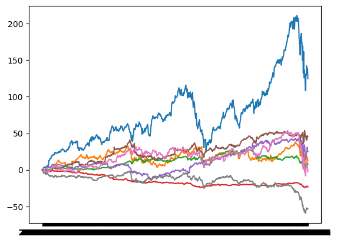

directory = '/Users/Ray/Downloads/stocks/'
fname = os.listdir(directory)[3]
filepath = os.path.join(directory, fname)
data = pd.read_csv(filepath, usecols=['Date', 'Close'])
data
import pandas as pd
import os
directory = '/Users/Ray/Downloads/stocks/'
ticks = ['AAPL', 'JNJ', 'CSCO', 'GE','PG','WMT','JPM','XOM']
stock_df = pd.DataFrame()
# Loop through all the files in the directory
for tick in ticks:
# Check if the file is a CSV file
fname = tick + '.csv'
filepath = os.path.join(directory, fname)
# Read the CSV file
data = pd.read_csv(filepath, usecols=['Date', 'Close'])
# Rename the 'Close' column to the stock's symbol (filename without '.csv')
# only consider after 2019
data = data[data['Date'] >= '2017-01-01']
data.rename(columns={'Close': tick}, inplace=True)
# Merge or concatenate the data into the main DataFrame
if stock_df.empty:
stock_df = data
else:
stock_df = pd.merge(stock_df, data, on='Date', how='outer')
stock_df.set_index('Date', inplace=True)
save_path = './stocks.csv'
stock_df.to_csv(save_path)
df = pd.read_csv(save_path)
df.head(5)
# remove date column
ticks = df.columns[1:]
df
| Date | AAPL | JNJ | CSCO | GE | PG | WMT | JPM | XOM | |
|---|---|---|---|---|---|---|---|---|---|
| 0 | 2017-01-03 | 116.150002 | 115.839996 | 30.540001 | 30.471153 | 84.199997 | 68.660004 | 87.230003 | 90.889999 |
| 1 | 2017-01-04 | 116.019997 | 115.650002 | 30.100000 | 30.480770 | 84.500000 | 69.059998 | 86.910004 | 89.889999 |
| 2 | 2017-01-05 | 116.610001 | 116.860001 | 30.170000 | 30.307692 | 85.059998 | 69.209999 | 86.110001 | 88.550003 |
| 3 | 2017-01-06 | 117.910004 | 116.300003 | 30.230000 | 30.394230 | 85.029999 | 68.260002 | 86.120003 | 88.500000 |
| 4 | 2017-01-09 | 118.989998 | 116.279999 | 30.180000 | 30.250000 | 84.400002 | 68.709999 | 86.180000 | 87.040001 |
| ... | ... | ... | ... | ... | ... | ... | ... | ... | ... |
| 812 | 2020-03-26 | 258.440002 | 126.570000 | 40.580002 | 8.120000 | 107.379997 | 109.820000 | 98.120003 | 38.820000 |
| 813 | 2020-03-27 | 247.740005 | 123.160004 | 38.820000 | 7.620000 | 110.169998 | 109.580002 | 91.129997 | 36.950001 |
| 814 | 2020-03-30 | 254.809998 | 133.009995 | 40.320000 | 7.890000 | 115.000000 | 115.190002 | 93.500000 | 37.500000 |
| 815 | 2020-03-31 | 254.289993 | 131.130005 | 39.310001 | 7.940000 | 110.000000 | 113.620003 | 90.029999 | 37.970001 |
| 816 | 2020-04-01 | 240.910004 | 128.809998 | 38.330002 | 7.040000 | 109.330002 | 114.139999 | 84.360001 | 37.529999 |
817 rows × 9 columns
import seaborn as sns
import matplotlib.pyplot as plt
df_align = df[ticks].apply(lambda x: x - x[0])
df_align['Date'] = df['Date']
for tick in ticks:
plt.plot(df_align['Date'], df_align[tick], label=tick)

mx = df[ticks].corr()
mx
| AAPL | JNJ | CSCO | GE | PG | WMT | JPM | XOM | |
|---|---|---|---|---|---|---|---|---|
| AAPL | 1.000000 | 0.546691 | 0.525021 | -0.602677 | 0.685072 | 0.816456 | 0.827860 | -0.616379 |
| JNJ | 0.546691 | 1.000000 | 0.415558 | -0.419751 | 0.420003 | 0.577944 | 0.557918 | -0.121805 |
| CSCO | 0.525021 | 0.415558 | 1.000000 | -0.833457 | 0.452086 | 0.705700 | 0.674112 | -0.201654 |
| GE | -0.602677 | -0.419751 | -0.833457 | 1.000000 | -0.399083 | -0.793097 | -0.665369 | 0.476449 |
| PG | 0.685072 | 0.420003 | 0.452086 | -0.399083 | 1.000000 | 0.780340 | 0.514171 | -0.598418 |
| WMT | 0.816456 | 0.577944 | 0.705700 | -0.793097 | 0.780340 | 1.000000 | 0.779783 | -0.593204 |
| JPM | 0.827860 | 0.557918 | 0.674112 | -0.665369 | 0.514171 | 0.779783 | 1.000000 | -0.287834 |
| XOM | -0.616379 | -0.121805 | -0.201654 | 0.476449 | -0.598418 | -0.593204 | -0.287834 | 1.000000 |
# find the most correlated stock
mx = df[ticks].corr()
max_corr = -1
idx_max_corr = (0, 0)
min_corr = 1
idx_min_corr = (0, 0)
most_uncorrelated = (0, 0)
uncorr = 1
for i in range(len(mx)):
for j in range(i+1, len(mx)):
if mx.iloc[i, j] > max_corr:
max_corr = mx.iloc[i, j]
idx_max_corr = (i, j)
if mx.iloc[i, j] < min_corr:
min_corr = mx.iloc[i, j]
idx_min_corr = (i, j)
if abs(mx.iloc[i, j]) < uncorr:
uncorr = mx.iloc[i, j]
most_uncorrelated = (i, j)
print('The most correlated stocks are {} and {} with a correlation of {:.2f}'.format(ticks[idx_max_corr[0]], ticks[idx_max_corr[1]], max_corr))
print('The least correlated stocks are {} and {} with a correlation of {:.2f}'.format(ticks[idx_min_corr[0]], ticks[idx_min_corr[1]], min_corr))
print('The most uncorrelated stocks are {} and {} with a correlation of {:.2f}'.format(ticks[most_uncorrelated[0]], ticks[most_uncorrelated[1]], uncorr))
The most correlated stocks are AAPL and JPM with a correlation of 0.83
The least correlated stocks are CSCO and GE with a correlation of -0.83
The most uncorrelated stocks are JNJ and XOM with a correlation of -0.12